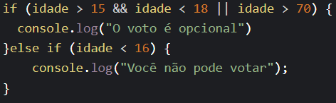
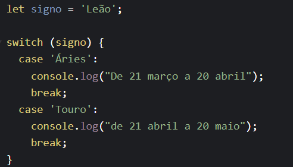
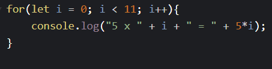
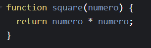

São elementos essenciais e ajudam o desenvolvedor, facilitando na hora de escrever o código.
Ao aprender sobre as estruturas, o desenvolvedor consegue produzir um código muito melhor e legível, além das diversas possibilidades que essas estruturas trazem para o código.
O JS possui estruturas condicionais, de repetição e funções.
As estruturas condicionais estão ligadas à tomada de decisão de um algoritmo. Ao utilizar expressões que retornam verdadeiro ou falso, o algoritmo executa o bloco de comandos relativos a este resultado. São elas, "if", "else if", "else" e Switch case.
O if significa "se" e é como usamos os operadores lógicos de uma linguagem. Ele condiciona um comando a uma condição qualquer, executando-o apenas se ela for verdadeira. Sua gramática é "if(condição){ faça isso }".
Além disso, após um if, também podemos chamar um else, que significa "senão". A gramática seria "if(condição){ faça isso } else {faça aquilo}", ou seja, se a condição for verdadeira, faça isso, se não (se ela for falsa) faça aquilo. Utilizamos o else if para impor outro bloco de comandos caso a primeira condição do if não seja atendida. Exemplo:
O Swith Case é uma instrução que se comporta de forma semelhante ao if / else, porém possui uma estrutura mais organizada e de fácil compreensão. Lembrando que só é aceito valores pré-definidos e não expressões condicionais. Exemplo:
Temos o for e o while. O for é um loop, ou seja, ele condiciona a repetição de um comando enquanto determinada condição for verdadeira. O loop mais simples é o while. Sua gramática é "while(condição) { faça isso }", ou seja, enquanto a condição for verdadeira, faça o que estiver entre as chaves. Exemplos:
São conjuntos de instruções que executam uma tarefa ou calculam um valor. Para usar uma função, você deve defini-la em algum lugar no escopo do qual você quiser chamá-la. Exemplo:
